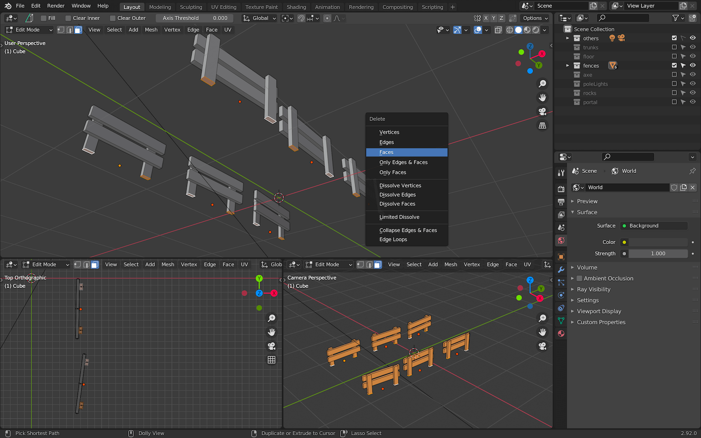
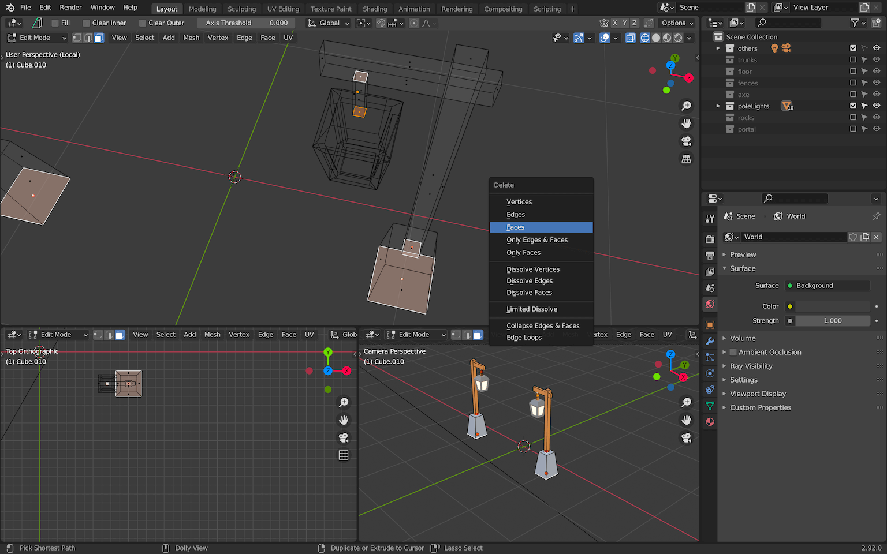
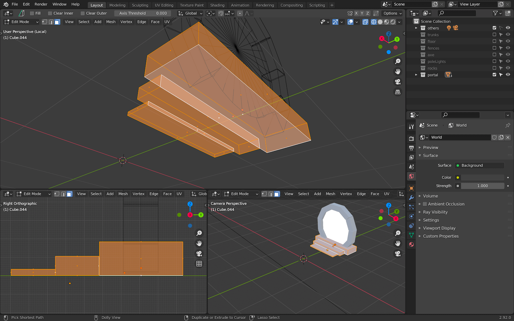
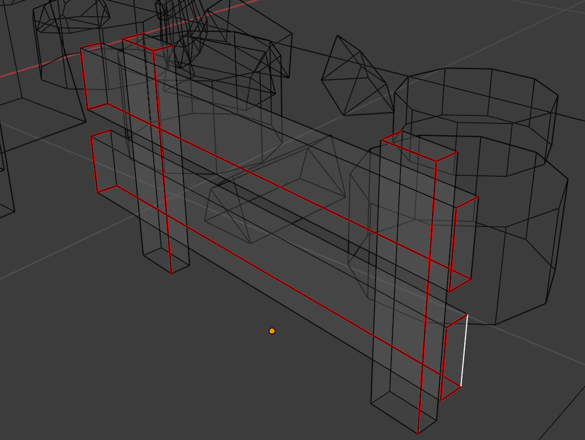
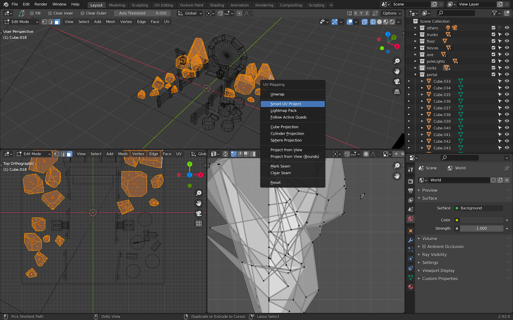
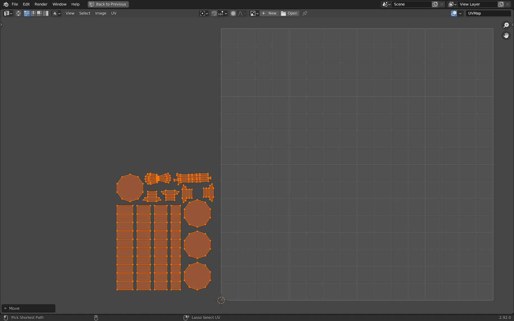

Introduction
We created a scene that looks good when doing a render, but our final goal is to export it to Three.js.
We need to optimize it, but also to bake it. If you remember from the previous lesson, baking consists of saving the good-looking render result into a texture that we will then place on the geometry in Three.js. Because of that, we need to UV unwrap our scene.
Setup
You can start from the blender file you made in the previous lesson, or you can get the same file as is in that lesson by using the starter file.
Optimization
Removing hidden faces
The first thing we need to do is remove all the hidden faces. That would mean faces directly on the floor like the bottom of the trunks. And, it would also mean faces against other faces like the back of the stair steps.
In order to see the faces more clearly, we can switch between the Wireframe and the Solid shadings:
Trunks
We are going to start with the trunks.
You can deactivate the collections you are not working on at the moment by unchecking them in the Outliner:
To optimize the trunks and logs:
- Select all of them.
- Go into
Edit Mode. - Switch to the
faceselection. - Select all the faces as shown below and delete them with
X.
You should get something like this:
Fences
Repeat the process with the fences:

Pole lights
Repeat the process with the pole lights. You only need to do one of the pole lights because they are linked duplicates.
Don't forget to delete the bottom cap of the main beam and the caps of the rope:

Rocks
Repeat the process with the rocks:
Though it isn't mandatory, if some rocks are overflowing into the ground, you can fix that with the bissect tool we used in the previous lesson. Select all the faces in Edit Mode, press F3 and search for bissect. Then slice the overflowing parts of the rocks you want to cut out.
Portal
For the portal, most of the optimization concerns the stairs.
You can start by resizing them so that they don't overlap too much:

Then you can remove the bottom faces but also the hidden faces between the steps:
If you did the previous lessons exactly as I said, and you now try to remove the faces of the bricks inside the stairs, you will see that you can't do it without editing all the bricks at the same time because they are linked duplicates.
If you didn't use linked duplicates, you shouldn't have this problem, but we are going to make sure that none of the objects in the scene are linked duplicates anyway.
Unlink duplicates
We need to unlink the duplicates in order to fix the bricks, as well as for the next step, which will consist of unwrapping the geometries. If we were to keep the links, both pole lights would be unwrapped on the same coordinates. This would result in the baking being done twice in the same position of the texture.
To unlink the duplicates, go into Object Mode and select all objects with A. Even if we are only concerned with the portal bricks and the pole lights, the action we are taking can be applied to the whole scene without consequences.
While all the objects are selected, press F3 and search for make single. Then choose Make Single User > Object & Data:
All previously linked duplicates are now unlinked and we can edit the bricks that overlap the stairs without changing all the bricks.
Remove the faces of the bricks inside the stairs:
Check the whole scene and make sure that you are done with removing the hidden faces.
Forgetting some isn't a big issue and you can still remove them later. But once we start unwrapping the geometries, removing faces at that time might have some consequences.
Fixing faces orientation
One issue we can't see has to do with the orientation of faces. All faces have a front and a back. While this isn't a problem when doing a render, it might create bugs during the baking process and some of the faces might become black. Those faces won't even be rendered in Three.js because, by default, back sides are hidden.
As you might have guessed, this orientation is a matter of normals. When doing extrudes, insets, and other operations like that, we might have flipped the normals unintentionally.
First, we need a way to see the faces orientation. While in Object Mode, in the top right corner of the Blender Viewport 3D, click on the following icon:
On the menu which should open, check Face Orientation:
You should now see blue faces when the orientation is good and red faces when the orientation is wrong:
In this case only the pole lights are wrong, but you might have a very different result with your model.
If everything is already blue, congratulations, you can skip this step.
To fix the red faces:
- Select the object you want to fix.
- Go into
Edit Mode. - Select the faces you want to flip.
- Press
F3, search forflipand chooseMesh > Normals > Flip.
Once the whole scene is blue, you can uncheck the Face Orientation and continue:
Normalize scales
Another problem is with scaling.
Some objects have been scaled in Edit Mode, meaning that we are scaling the geometry and not the object itself. Some other objects have been scaled in Object Mode, meaning that there is a transformation on the object but not on the geometry itself.
Again, while doing renders, it's not really important. But it might create issues when doing the UV unwrapping.
Later in the lesson, we are going to use automatic UV unwrapping and Blender will take into account the geometry size but not the object scale. This might result in some objects taking more space or not as much space as they should. For example, you might end up with the axe taking only half of the texture because the geometry is still huge even though we reduced the object scale.
To fix that, we need to normalize all the scales.
In Object Mode, select all the objects with A , press CTRL + A to open the Apply menu and choose Scale:
You can't see a difference, but all of the object scales have been applied to their geometries instead. This way, all our objects now have a scale of 1.
We are done with the optimization and we can start to UV unwrap our scene.
Don't forget to save.
UV unwrapping
The idea is to unfold all the geometry composing our scene into a square. Later, this will enable us to bake the render into a texture that will follow the unwrapping we set.
The scene:
The unfold scene:

There are multiple ways of unwrapping a geometry. We can use a "smart" automatic version that will do a pretty good job. Or, we can do a manual version to create a more optimized version, but at the price of more effort.
We are going to do a mix of both techniques depending on the objects.
First, we can change the bottom right area to UV Editor:
The UV Editor displays a square that represents our unfold. We need to make everything fit inside that square. We could have used multiple textures, which would mean independent UV unwraps, but our scene isn't that complex or big.
Floor
Let's start by unwrapping the easiest element, the floor.
- Select the floor.
- Go into
Edit Mode. - Select the whole geometry with
A.
As you can see in the UV Editor, the plane is already unwrapped and takes the whole UV. By default, Blender generates UV coordinates for most of the primitives. This is good, and we can simply move that square to a corner of the UV map.
To edit the UV, the shortcuts are almost the same as editing an object. While hovering the UV Editor area, press A to select everything, S to scale it and G to move it:
Don't spend too much time on placing it exactly. In the end, we will reorganize things.
Fences
Let's try a more difficult shape and unwrap the fences.
- Select one of the fences.
- Go into
Edit Mode. - Select all the faces with
A.
As you can see, the geometry is already unwrapped, but the 4 boxes that compose our fence are stacked one above the other and in a cross shape that doesn't match the proportions of our geometry. This is the default UV unwrap of a cube. We need to unwrap it ourselves.
We are going to focus on one of the poles of the fence first. To select a pole, click on one of the faces:
Press CTRL + L and all the other faces of the pole should now be selected (make sure that Seam is active on the menu which should open in the bottom left of the area:
This technique is very useful to select what we call islands. An island is a group of faces that are connected together.
To unwrap the pole, press U and choose Unwrap:
Unfortunately, this isn't a good unwrap:
And this is because we didn't provide information on how to "cut" the geometry.
If you try to unfold a cube without cutting some of the edges, you'll end up with a mess. Those cuts are called seams.
To create a seam, go into Edge selection and select the edges you want to be cut when unwrapped:
Press U and choose Mark seam:
If you unselect everything, you'll see that those seams are now in red:
If your seams are fine, don't touch them, but be aware that you can remove them if you need to. To do that (and don't, if you don't need to), select the concerned edge, press U and choose Clear Seam:
Finding where to cut the geometry can be very hard. You'll have to anticipate the result and try until it works. Just make sure that the faces aren't distorted.
Select the whole pole again (select one part and press CTRL + L to select the whole island), press U and choose Unwrap to unwrap it again:
As you can see, this unwrap is much better.
Let's do the same with the other pole. Select the same edges, press U and choose Mark Seam:
Then select the whole pole, press U and choose Unwrap:
You should get the same result. The unwraps of the two poles are overlapping but we will fix that later. For now, we should only focus on setting the seams right.
Cut one of the planks the same way:
Unwrap it:
And this time, instead of doing the same thing for the other plank, simply remove the bottom one, duplicate the top (already unwrapped) one and place it where the bottom one was:

This is just a way to gain some time.
Now that all the different parts of the fence are well cut with seams, select all the geometry, press U and do the unwrap again:
The unwrap is looking great, unfortunately the island are way too close to each other. This will be an issue when we will bake because the baking will overflow a little. We need to move them apart.
When you choose Unwrap, a small menu appears on the bottom left of the area (if you lost that menu, unwrap again):
Here, you can change the Margin. Increase it a little to something like 0.15:
As you can see, the islands are now slightly separated.
Before moving those UV coordinates somewhere in the map, we need to handle the other fences.
Instead of cutting and unwrapping all of the fences, we can simply remove the previous ones and duplicate the unwrapped one at its positions. Don't spend too much time positioning at the exact same position.
In Object Mode, duplicate the unwrapped fence with SHIFT + D and replace the others.
Now select all the fences, go in Edit Mode, select all the faces and unwrap them again, but this time, all together.
You should change the Margin to something like 0.065:
(You might have noticed that there are more islands in the above screenshot. This is due to an error in which I duplicated one of the fences at the same place. Ignore this.)
Put those unwraps in a corner of the UV map:
Again, the exact position isn't important and we will reorganize everything later.
Separating the Emission material
We are going to repeat the whole process for the pole lights, but before doing so, we need to separate the objects that emit lights.
We are doing this because we don't want to bake those objects. In the end, they are uniform colors and we are going to create materials within Three.js to give them those colors.
We could have baked those objects, but it's a waste of space in the texture.
Create a emissions collection and put the two lamps and the portal (only the emission part) in it:
Make this collection unselectable so that we don't select them while doing the baking:
Pole lights
We can now unwrap the pole lights.
As with the fences, start with only one and, once you are happy, duplicate it and put it in place of the other pole light.
To help you focus on the object you want to unwrap, you can select it and press / on the numpad. This will isolate it:
If you want to leave that isolation, press / again.
You can try the unwrap on your own. Take your time, it's a long process. But with time, you'll be able to do it fast and efficiently.
You'll probably get a different result than in the lesson and that's totally normal. There are so many different ways of unwrapping and we don't really know if we are doing mistakes yet. Just do your best and don't hesitate to create too many cuts.
Here is how I did it:
The lamp frame is especially hard to cut. Here, I decided to make only one cut that goes from the bottom up. This is not always a good idea because, as you can see, it creates some distortion once you unwrap it:
But it's not that bad and at least we minimize the number of islands.
The unwrap looks like this:
Before reorganizing the islands, we can duplicate the pole in place of the other one and unwrap both of them together:
Since the islands are curvy, Blender doesn't do a great job placing them. Optimize the placement a little bit and put them in another corner of the UV map. Always make sure to leave some space between them:
Portal
Apply the same process for the portal. Isolate each object, add the seams, test the result by unwrapping and once you're done with all the parts of the portal, select them all and unwrap everything.
Here is the stair:
Here are the bricks:
And here is the whole portal:
Rocks
Do not worry, we are not going to cut them ourselves. Even if we did, it would have taken ages and we would have ended up with distorted unwraps. Instead, we are going to use an automatic "smart" unwrap.
- Select all the rocks.
- Go into
Edit Mode. - Select all the faces.
- Press
Uand chooseSmart UV Project.

Validate the window that should open (we get access to the same parameters right after):
And here is your automatic unwrap:
Increase the Islands Margin to something like 0.025 to make some space between the islands.
Unfortunately, we already used all the corners of our map. For now, let's move the unwraps out of the map. This isn't a problem because, in the end, we will reorganize everything.
As you can see, automatic unwraps are decent. We could have used this technique for the whole scene. But, doing it on our own let us optimize things a bit more by minimizing the number of islands and reducing the seams. It's also a good way to keep the different groups of islands separated. This might get handy if we decide to remove an object. We will get the full area available for more unwrapping.
Trunks, logs and axe
Cut the trunks. Don't forget to also add a cut for the ring all around each trunk.
Cut the logs:
Cut the axe:
Unwrap them all (trunks, logs and axe) at once and place them somewhere outside of the UV map:

Reorganizing
That's it, we've unwrapped the whole scene.
Currently, however, the groups of islands are spread all around the UV map and even outside of it.
Select all the unwrap objects (not the emissions objects). Then, go into Edit Mode and select all the faces to get a preview of the current UV unwrap:
If you don't have this or if you have overlapping unwraps, try to figure out which object is the problem and fix it. You might also have forgotten some objects.
Before trying to make everything fit inside the UV map, we need to make sure that the proportions are the same between the different groups. We don't want an object to take a smaller or bigger space than it really needs.
Use the following icon on the top right part of the UV Editor (if you can't see it, enlarge the area):
In the menu that should open, check Display Stretch and change it to Area:
For some older versions of Blender, this option might be located in a different place. If you have a Display button on the top right corner, open it and you should find a stretch or stretching checkbox. If you don't have any of those, open the sidebar with N (if not already open) and go to the view tab to find the checkbox.
You'll now know if the area taken by an island is bigger or smaller than the others by using the colors:
Scale the different parts until everything has a similar color. The color might be different from mine.
It's now time to make everything fit in the UV map. One very important step here is to listen to the Tetris music theme at the same time.
Few tips:
- Start by placing the groups in a rough square shape without looking at the UV map limits. Then resize the whole thing to make it fit in the UV map.
- Keep some space between the islands.
- You can scale some islands up to have a better quality for them in the final texture. It's good practice to do that for big surface or surfaces that the camera can see from up close. In our case, we can make the floor a little bit bigger.
- If you have some room left, keep it. It might become useful if you forgot an object or if you want to add one.
- The groups don't have to fit in perfect rectangles. Usually, I use one group with a lot of small islands like the rocks to fill the holes.
Once you're happy with the result, you can deactivate the Display Stretch:
Baking
Now that our scene is nicely unwrapped, we can start to bake it.
Creating the texture
First we need to create a texture in Blender and we can use the UV Editor area to manage that image.
Leave the Edit Mode. On the top of the area, you should have a + New button:
Click on it to open the New Image menu:
Use the following parameters:
Name
Use baked.
It could be anything, but we are going to have only one texture and it's going to contain the "baked" texture.
Width and Height
Use 4096.
We use a power of 2 size because this texture will be used in Three.js. 4096 is a lot but we want a good quality. 8192 textures might not work for every browser.
Color
Use a white color.
This isn't that important but, in Three.js, when looking at the model from specific angles, the mip mapping might let that color appear on edges of the geometry. A white tint will look like a reflection and users won't notice it.
Alpha
Unchecked.
We don't need alpha in our texture.
Generated Type
Use Blank.
We want the initial texture to be the color we chose right above. The other options create grids that can be used to see how the texture looks on the geometry, but we don't need that.
32-bit Float
Checked.
This is a very important part that we will explain a bit later.
Tiled
Unchecked.
We don't need the texture to repeat itself.
Here is the final setup:
Validate it and the background of your UV map should now use that image. Zoom out if you can't see the edges of your map:
Be aware, that you can show any texture as the background of the UV Editor. The goal here is to help you see both the UV Mapping and the texture at the same time.
Saving the texture
Before baking anything in the texture, we are going to save it somewhere. This is actually not mandatory and textures can live inside the Blender file without being available as a separate file.
You might think that we have to save it in a file because we want to use it later in WebGL, but this texture is actually not the texture we are going to use.
If you remember, we chose to check 32-bit float. This made the texture data much more precise than a classic texture. In a way, we made an HDR texture. The problem with HDR textures is that they are way too heavy.
The question is, why do we need this HDR texture? We will answer that question later. For now, we are baking our scene inside a HDR texture in order to keep all the data.
Still, for the purpose of this lesson, we want to save the image in a separate file. On the top of the UV Editor area go into Image > Save As:
A saving window should open. Choose Radiance HDR as the File Format and change the name to baked.hdr. Make sure to save in the same folder as your .blend file:
We chose Radiance HDR as the File Format but some other formats can support high precision textures like OpenEXR However, the file is going to be huge.
If you open the right menu of the UV Editor (press N while hovering the area) in the Image tab, you should see that the texture is now the baked.hdr file in the same folder:
If you want to share your .blend file or move it in another folder, you'll have to keep the baked.hdr file with it.
Preparing the materials
We are almost ready to bake. Because we can have multiple textures in our project, we need a way to tell Blender that the texture we created is the one in which each object has to be baked. This information has to be provided on each material.
We can start with the floor.
Select the floor.
To define in which texture the material should be baked, we need to use the Shader Editor . Take one of the areas (or create a new one) on your layout and change it to Shader Editor:
This will be a Shader Editor for the grass material and it uses nodes. We won't go into details about nodes because we only need to create one and then make it active.
If you can't see these two nodes, make sure Use Nodes on the top part of the area is checked:
Also make sure that you selected the floor and that the grass material is applied to it.
To create a new node, press SHIFT + A while hovering the Shader Editor area:
Here, you can navigate to Texture > Image Texture
This is an Image Texture node:
Click on the drop-down image icon and choose our baked texture:

And that's it. Our material now knows it's supposed to bake itself inside the baked texture. We don't need to link that node to another node. We just need it to be here.
Make sure that this texture node is selected (it should have a white outline).
If you have multiple texture nodes in your shader, the active one will be the one used for baking.
Also, we leave the Color Space as linear. This might sound strange because we learned that sRGB enables better color management, but don't forget that this is still an HDR texture and we are not going to use it directly in the WebGL.
Baking the floor
It's finally time to do our first bake.
While the floor is still selected, in the Properties area, go to the Render Properties tab and then in the Bake section:
If you can't see this section, you are probably using Eevee. Change the Render Engine to Cycles.
The Bake section should look like this:
The Bake button will start the baking process and the parameters below let us tweak it.
The Bake Type menu lets us choose what we want to bake. For example, this is where we could have created an Ambient Occlusion texture. Leave it on Combined in order to bake everything.
The Margin property lets us control how much the baking will overflow from the area it is supposed to fill. We can keep 16 px for now. If we see that the baked islands are overlapping on their neighbors, we can reduce the margin.
The Clear Image property will erase the current image in the texture each time we do a bake. Because we are not going to do all the baking at once, uncheck it.
Before we can bake, we have to choose a Sampling quality. Scroll up to the Sampling section and choose 256:
This might sound low, but we will fix the visual noise later.
Make sure you selected only the floor. Also, make sure the Texture node is active. Now, hit the Bake button and wait.
You can see the progress at the bottom of Blender:
The floor is the biggest and longest part to render, but if you want to accelerate the process, you can change the Sampling to 128 and it should look good enough.
Here is your floor baked onto the texture:
If the baking has ended, but you can't see the result in the texture, it might be a Blender bug. Do not worry, the process probably worked alright. Save the image with ALT + S while hovering the UV Editor area. Then, click on the refresh button you can find in the menu on the right of that same area (press N to toggle the menu):
Even if the baking worked, now is a good time to save the image. Since the image is a separate file in Blender, you have to save the image independently. If you try to leave Blender with an unsaved image, do not worry, Blender will alert you.
To save the image, while hovering in the UV Editor area, press ALT + S.
Baking the other objects
We can now repeat the process for the other objects. Let's start with the fences.
Select the fences:
Add the same Image Texture node and change it to the baked texture. Also make sure that the node is active:

Click the Bake button and wait:
You can continue like this with all the objects in the scene.
If you try to bake the trunks, the axe handle or the logs, you'll see that the texture is already set in the Shader Editor nodes. It's because they are sharing the same material.
You can try to bake multiple objects at once, as long as the texture node is set for all concerned materials.
Here is the final baked texture:
Don't forget to save both the .blend file and the image.
Troubleshooting
If you see some parts overlapping, select the object, go into Edit Mode, select all the faces and start moving the UV mapping to separate the islands a little. Then do the baking process of those parts again.
If some islands look unusually black, you might have flipped their normals accidentally. You need to locate them and flip them back.
- Display the normal orientation like we did previously.
- Locate the problematic ones (they should be red).
- Select the object and go into
Edit Mode. - Select the red faces.
- Press
F3, search forflipand chooseMesh > Normals > Flip.
You can bake them on top of the previous bake.
Exporting the image
The color issue
As you can see, the colors are all burned out. If you compare to the render, the colors will have less contrast and look like this:

It's as if they are being toned in the render and that's exactly the case. When you do a render in Blender, a color manager named Filmic is used.
You can find it at the bottom of the Render Properties tab in the Color Management section:
If you want to test a render without Filmic, change the View Transform to Standard and do a render with F12:
As you can see, we have the same ugly colors with high contrast.
This tells us that, when baking in Blender, we are losing Filmic.
The noise issue
Another problem is the visual noise. When you do a render and if you have checked the denoise parameter, you can see a smooth render without noise.
When baking, the noise is back:
As with Filmic, Blender seems to ignore the denoise parameter.
The image type issue
Finally, we want to export a compressed image that we can use in Three.js. We want it to be light and because we don't need transparency, we can use JPEG. Also, we want to apply the sRGB encoding to improve the color quality.
But currently, all we have is our fancy HDR image.
The solution
All of these problems can be fixed with the Blender Compositor.
The Compositor can be accessed within an area. Change one of the current areas (or create a new one) and choose Compositor:
The compositor uses nodes and, by default, your should have a Render Layers node and a Composite node:
To tell Blender to use those nodes when rendering, make sure to check the Use Nodes on top of the Compositor area:
The idea, here, is to create some nodes that will take our texture, apply a denoise on it and then apply Filmic. Then we output that texture to the render by sending it to the Composite node.
Start by creating an Image node with SHIFT + A:
Change the image to our baked, using the dropdown menu:
Normally, you should see your texture in the node preview, but this feature sometimes has bugs. Save everything and reopen it if you want to see the preview:
Now create a Denoise node to the right of the Image node:
Keep the default parameters:
Link the Image output of the Image node to the Image input of the Denoise node:
Link this Denoise output to the Composite input:
But where is Filmic? you might ask.
Filmic will automatically be applied as long as you have set it in the parameters of the render:
Doing the compositing is like doing a render. But we don't want to render the scene, we want to render our image through the nodes we created. To deactivate the default render of the scene, select the Render Layers and press M to "mute" it.
It should appear gray:
If you want to do a classic render again, you'll have to mute the two nodes we've made, unmute the Render Layers and link this last one to the Composite.
We also need to change the resolution of the render so it matches the texture resolution.
Go into the Output Properties and change the resolution to 4096x4096:
Finally, render with F12.
This operation shouldn't take too long and you should see a beautiful render with the right colors and no noise on it:

With the render window open and while hovering it, press ALT + S to save it.
Change the File Format to JPEG, lower the quality a little (75% should be enough) and name it baked.jpg:
Save it where you want. We are going to use it later in Three.js.
Exporting the model
We need to apply some modifications to the model in order to optimize it a bit more. But we are not going to do that now because we want to witness the issues when importing it into Three.js. This will help us understand better why we are doing these optimizations.
For now, let's simply export the whole scene.
Make all the collections selectable but not the others collection (even the emissions collection):
In Object Mode, select everything with A:
Now export as glTF 2.0:
Here are the exporting parameters:
Some more information:
- Check
Remember Export Settings, so you don't have to set those settings every time you want to export. - Use
.glbbecause it's lighter, though it won't make a huge difference. - Export only the
Selected Objects. We don't want to export the camera and the light. - Check
+Y Upbecause theYaxis is going up on Three.js. - In the geometry, we only need the
UVs. Remember that we just want to place the baked texture on it. - Activate the
Compression. We are going to use Draco. - Deactivate everything related to the
Animationbecause we have none.
Name your file portal.glb and put it with your baked.jpg file.
Be careful, some versions of Blender like 2.90.0 have a bug when you try to use the compression. Simply uncheck the Compression. The file is small and we don't really need Draco anyway.
We now have both the baked.jpg file and the portal.glb files. In the next lesson, we are going to import them into Three.js as well as optimize the model a bit more.